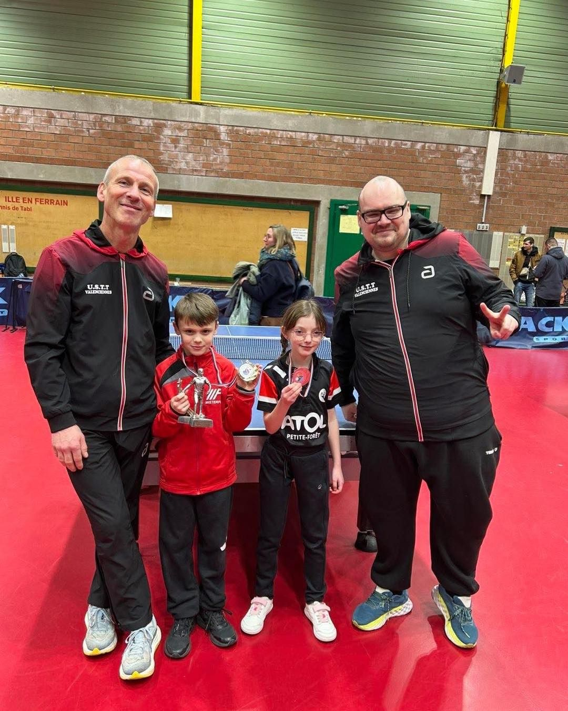

Accueil / Le club
PrésentationLe club
Le tennis de table valenciennois s'écrit depuis 1936. Une histoire, des valeurs et une grande famille réunie au Complexe sportif Fort Minique.
Une histoire, un club
Après des décennies riches en histoire, trois clubs de la ville, l'USVA, le TTV (ex-ASPTT Valenciennes) et Chartreux Valenciennes, se sont unis en 2005 pour donner naissance à l'USTT Valenciennes.
Depuis, le club n'a cessé de grandir : équipes de compétition jusqu'au niveau national, école de tennis de table, section vétérans, handisport, sport santé et une vraie vie associative qui rythme chaque saison.

Les débuts du tennis de table à Valenciennes.
Fusion de l'USVA, du TTV et de Chartreux Valenciennes : naissance de l'USTT.
Licenciés aujourd'hui, l'un des plus grands clubs de la région.
Une équipe Dames en Nationale 2 et une équipe Messieurs en Nationale 3.

Bienvenue dans la grande famille du tennis de table valenciennois ! L'USTT Valenciennes est avant tout une association sportive, portée par ses licenciés, ses bénévoles et ses valeurs collectives. Ici, le tennis de table n'est pas qu'un sport : c'est une passion partagée, une aventure collective et une belle histoire humaine.
Jean-Louis BacriPrésident de l'USTT ValenciennesQuatre piliers, une même énergie
Un bureau engagé
Représentatif de ses licenciés, il œuvre au développement et à la structuration du club.
Pôle compétition
Des équipes engagées jusqu'au niveau national pour se dépasser et représenter le club.
Pôle loisir
De nombreux licenciés réunis dans une ambiance chaleureuse, avec un encadrement de qualité.
Pôle jeunes
Une école de tennis de table en plein essor qui accompagne chaque enfant dans sa progression.
Un club ouvert à toutes et à tous
Familial, inclusif, dynamique et formateur : le club porte des politiques concrètes.
Sport santé
Une pratique adaptée pour rester en forme, à son rythme.
Féminisation
20 % de féminines et une équipe Dames en Nationale 2.
Handisport
Une section dédiée et encadrée chaque jeudi.
RSE
Un club responsable, ancré dans son territoire.
Un lieu pensé pour le club
Le club évolue au Complexe sportif Fort Minique, à Valenciennes. Entraînements et compétitions se déroulent dans la salle Angèle Joing, au sein du Club House André Carez.
- 14 tables installées pour tous les niveaux
- Un plateau dédié aux matchs officiels
- Un espace tribune pour le public
- Un club house, lieu de convivialité et d'échange

Rejoignez l'aventure bénévole !
Le dynamisme du club repose en grande partie sur l'engagement de ses bénévoles. Aucune expérience n'est nécessaire : la motivation, la bonne volonté et l'envie de partager suffisent.
Aide lors des événements, accompagnement des équipes, logistique, communication ou vie du club house : chacun contribue à sa manière, même ponctuellement.
Donner un peu de son temps, c'est faire grandir le club !

Prêt à taper la balle ?
Débutant ou confirmé, petit ou grand : il y a toujours une place pour vous à l'USTT Valenciennes.